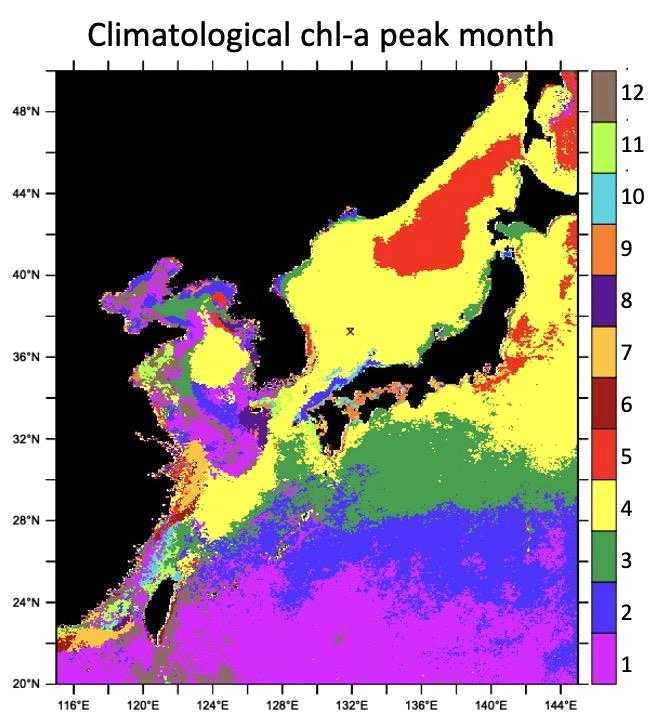

식물플랑크톤 최대 번성 시기(월)
한국해양과학기술원 해양기후예측센터가 위성 해색(Ocean Color) 자료(OC-CCI, 1998~2023)로 산출한 엽록소a 농도를 바탕으로, 우리나라 주변 해역에서 식물플랑크톤이 연중 가장 왕성하게 번성하는 시기(월)를 분석한 예시 자료입니다.
육상에서 계절에 따라 꽃이 피고 지듯이, 바다에 사는 식물 플랑크톤들은 햇빛과 영양염(질소, 인, 규소 등)이 풍부한 시기에 활발하게 번성한다. 인공위성에 탑재한 해색(Ocean Color) 센서를 통해 바다의 식물 플랑크톤이 가진 광합성 색소(엽록소a)의 농도를 추정할 수 있는데, 이를 통해 우리나라 주변 바다에서 일 년 중 언제 가장 왕성한 식물 플랑크톤 번성이 일어나는지 분석할 수 있다.
아래 그림은 유럽 항공우주국(ESA)과 미국 항공우주국(NASA) 등에서 발사한 위성에 탑재된 다양한 해색 센서 자료를 재분석하여 1998년부터 바다의 엽록소a 농도를 추정한 자료(OC-CCI)를 기반으로 평균적으로 연중 어느 시기에 식물플랑크톤의 최대 번성이 일어나는지를 표시한 것이다.

평균적으로 따뜻한 남쪽 바다에서는 1~3월에 상대적으로 일찍 번성이 시작되는 것을 알 수 있으며, 황해와 동중국해 사이 해역과 황해를 둘러싼 북쪽 해역에서도 상대적으로 일찍 번성이 일어나는 것을 알 수 있다. 동중국해 중앙부와 황해 중앙부 및 동해의 대부분 해역에서는 4월에 식물 플랑크톤 최대 번성이 일어난다. 동해 연안역과 북동부 중앙해역에서는 이보다 한 달이 늦은 5월에 최대 번성이 일어나며, 중국의 창강(양쯔강) 하구역에서는 7월에 최대 번성이 일어남을 알 수 있다.
평균적인 최대 번성월을 위와 같이 기술할 수 있으나, 실제로 바다에서의 식물 플랑크톤 번성은 수 일 주기로 여러 번에 걸쳐 나타날 수 있으며, 수온과 구름, 바람의 작용에 의해 해마다 시기마다 매우 다르게 나타날 수 있다. 온난화로 대표되는 기후변화는 수층 간의 혼합을 억제해 깊은 곳의 영양염이 햇빛이 비치는 유광대로 쉽게 공급할 수 없게 만들어 바다에서의 일차생산이 줄어들 것으로 예측하기도 하지만, 다양한 환경 조건의 변화는 해역별로 다양한 변화를 유발할 수 있다.